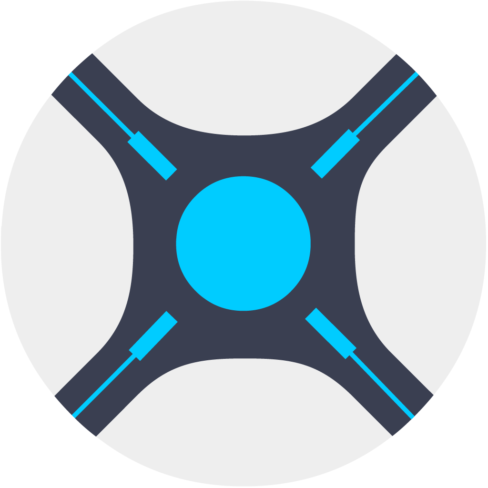

Connections
The Connections page is where all external connections are defined. Currently this is the following:
Each Connection is described in greater detail below.


Private Information
Any input field marked with an icon is encrypted within the TitleCardMaker database, and is automatically redacted from all logs.
Authentication
If you expose your instance of TCM outside your LAN (through a reverse proxy or some other means), it is recommended to enable Authentication so that a username and password are required to access TCM.
Once authorized, the OAuth2 access token for your login is stored in your browser's local storage, so accessing the interface from another browser will require re-authentication. Tokens expire after two weeks.
API Request
All1 API requests also require authorization (if enabled). If accessing
the API from the UI, then the locally stored
OAuth2 session tokens should be applied, but if not you can click
Authorize in the top right of the API page and enter your credentials.
First Time Setup
When first enabling Authentication by clicking the Require Authentication
checkbox, a temporary username and password will be created. These are
printed in the logs, but default to admin and password.
Changing Credentials
After authentication is enabled, returning to the Connections page will show
your current username and an empty password field. Simply type in your desired
username and password, then hit Save Changes and TCM will modify your
credentials - prompting a new login.
Disabling Authentication
Authentication can be disabled at any point by unchecking the Require
Authentication checkbox.
Forgotten Login
If you've forgotten your login credentials, follow the following steps to disable authentication.
-
Define the
TCM_DISABLE_AUTHenvironment variable asTRUE. -
If you're using Docker, pass this environment variable into the container with
-e(or in your Docker Compose file); if you're not using Docker then nothing else is necessary. Relaunch TCM. -
Navigate to the Connections page (
/connections), re-enable Authentication - TCM will then create a new User with the default username and password asadminandpassword. -
Login, then change your credentials as desired.
-
Close TCM and either define
TCM_DISABLE_AUTHas something other thanTRUE, or remove the specification altogether. Re-build/launch TCM. -
Get a password manager!
Adding a Connection
For each Connection type, clicking the button will create a blank form which you can enter all details into. After you have finished entering the info, click and TCM will refresh the page.
Additional settings can be entered after creation. Open the newly created Connection, enter those details, and click
Emby
As a Media Server, Emby can serve as an Episode Data Source, Image Source, and as a location where Title Cards are uploaded to.
TCM can communicate with any number of Emby Media Servers, although if you plan to use watch-status styling, make sure you read and enable the global multi library filename support setting first.
Connection Name
The name of the Connection as it appears within the UI. This is purely cosmetic.
URL
The root URL to your Emby server, including the port.
API Key
API key to authenticate communication. The process of creating one within Emby is covered Getting Started.
Filesize Limit
The maximum file size of Title Cards to upload to Emby. Title Cards larger than this will be compressed1.
Changing this setting does not retroactively affect created or uploaded Title Cards.
This can be entered as {digit} {unit} - e.g. 4 Megabytes - where the
acceptable units are Bytes, Kilobytes, and Megabytes.
Username
Username of the user to query Episode watched statuses from.
SSL
Whether to connect with HTTPS instead of HTTP.
Jellyfin
As a Media Server, Jellyfin can serve as an Episode Data Source, Image Source, and as a location where Title Cards are uploaded to.
TCM can communicate with any number of Jellyfin Media Servers, although if you plan to use watch-status styling, make sure you read and enable the global multi library filename support setting first.
Connection Name
The name of the Connection as it appears within the UI. This is purely cosmetic.
URL
The root URL to your Jellyfin server, including the port.
API Key
API key to authenticate communication. The process of creating one within Jellyfin is covered in Getting Started.
Filesize Limit
The maximum file size of Title Cards to upload to Jellyfin. Title Cards larger than this will be compressed1.
Changing this setting does not retroactively affect created or uploaded Title Cards.
This can be entered as {digit} {unit} - e.g. 4 Megabytes - where the
acceptable units are Bytes, Kilobytes, and Megabytes.
Username
Username of the user to query Episode watched statuses from.
SSL
Whether to connect with HTTPS instead of HTTP.
Plex
As a Media Server, Plex can serve as an Episode Data Source, Image Source, and as a location where Title Cards are uploaded to.
TCM can communicate with any number of Plex Media Servers, although if you plan to use watch-status styling, make sure you read and enable the global multi library filename support setting first.
Connection Name
The name of the Connection as it appears within the UI. This is purely cosmetic.
URL
The root URL to your Plex server, including the port.
Token
Token to authenticate communication. The process of obtaining your Plex Token is covered in Getting Started.
Filesize Limit
The maximum file size of Title Cards to upload to Jellyfin. Title Cards larger than this will be compressed1.
Changing this setting does not retroactively affect created or uploaded Title Cards.
This can be entered as {digit} {unit} - e.g. 4 Megabytes - where the
acceptable units are Bytes, Kilobytes, and Megabytes.
SSL
Whether to connect with HTTPS instead of HTTP.
Kometa Integration
Whether to remove the Overlay label after uploading Title Cards. This also
prevents TCM from grabbing Source Images with overlays applied.
Only check this box if you use (or have used) Kometa Episode overlays.
Tautulli
The Tautulli agent is covered here.
 Sonarr
Although Sonarr can only serve as an Episode Data Source, it is typically much faster than the other alternatives (Emby, Jellyfin, Plex) and is generally the recommended option for most users.
In addition to this, Sonarr can act as a Tautulli alternative which works for non-Plex Media Servers and triggers immediate Title Card creation when new Episodes are added - settings this up is detailed here.
Connection Name
The name of the Connection as it appears within the UI. This is purely cosmetic.
URL
The root URL to your Sonarr server, including the port.
API Key
API key to authenticate communication. The process of getting one from Sonarr is covered in Getting Started.
SSL
Whether to connect with HTTPS instead of HTTP.
Downloaded Episode Toggle
Whether to only get Episode data for Episodes which are downloaded. This is only applicable if Sonarr is the Episode Data Source.
If unchecked, and Sonarr is the specified Episode Data Source, then TCM will grab Episode data for all Episodes within Sonarr, typically resulting in Title Cards for Episodes which you do not personally have.
Library Paths
If Syncing from Sonarr, then this setting is critical to ensure that TCM is able to correctly auto-assign libraries to Series. If you are not Syncing from Sonarr, then you can leave this blank.
Each set of inputs corresponds to a single Library which TCM can assign to. This means you should generally have one entry for each library across all your servers. This setting requires that your libraries are in separate directories (at least within the same Media Server).
Paths
All paths should be the path within Sonarr - so users with their Sonarr server inside a Docker container need to specify the paths that appear within the container, not your Media Server.
See the examples for details.
Example Library Paths
Within Plex, I have two libraries called Anime and TV located at
/data/media/Anime and /data/media/TV respectively. My Library Paths
setting should look like:
| Media Server | Library Name | Path |
|---|---|---|
| Plex | Anime | /data/media/Anime/ |
| Plex | TV | /data/media/TV/ |
Within Jellyfin, I have four libraries called Anime, Anime 4K,
TV Shows, and TV Shows 4K - they are located at /data/media/anime,
/data/media/anime 4k/, /data/media/tv/, and /data/media/tv 4k
respectively. The Library Paths setting should look like:
| Media Server | Library Name | Path |
|---|---|---|
| Jellyfin | Anime | /data/media/anime/ |
| Jellyfin | Anime 4K | /data/media/anime 4k/ |
| Jellyfin | TV | /data/media/TV/ |
| Jellyfin | TV 4K | /data/media/TV 4k/ |
Within Emby I have two libraries: TV, and Reality TV located at
C:\TV and K:\Reality TV; within Plex there are two libraries:
Anime and Reality TV located at C:\Anime and K:\Reality TV (the
same directory as within Emby). The Library Paths setting should look
like:
| Media Server | Library Name | Path |
|---|---|---|
| Emby | TV | C:\TV |
| Emby | Reality TV | K:\Reality TV |
| Plex | Anime | C:\Anime |
| Plex | Reality TV | K:\Reality TV |
When Syncing, TCM will add the library assignments defined in the Connection to the Series.
Tautulli
Typically, TitleCardMaker creates and loads Title Cards on an adjustable schedule. However, TCM is able to set up a Notification Agent on Tautulli so that it can notify TCM immediately after new Episodes are available, or an existing Episode has been watched.
This integration can only be created after creating a Plex connection, and it is server-specific, as Tautulli only works on one Plex server at a time.
The instructions for enabling this integration are detailed here.
TheMovieDatabase
TMDb is a free database service which can serve as an Episode Data Source, and is the recommended Image Source due to the much higher quality (and wider selection) of images compared to the Media Servers. It is also the only Connection which can provide Episode translations.
Why enable multiple TMDb Connections?
Because TMDb is a service, and not a local server, in a vast majority of use cases, users should not enable multiple TMDb Connections (as each Connection will have the same data available).
However, some users might find value in the flexibility to selectively
adjust some options (such as image resolution or language priority), so the
ability is present (and it was also just easier to program that way
 ).
).
Connection Name
The name of the Connection as it appears within the UI. This is purely cosmetic.
API Key
API key to submit request to TMDb. These are free, and details on obtaining one are covered in Getting Started.
Minimum Image Resolution
The minimum resolution of Source Images to gather from TMDb. This must be
entered as {width}x{height} - e.g. 800x400 - and can be as low as 0x0 (to
not apply any minimum resolution).
Language Priority
The relative priority of languages to search for posters and logos under. This is ordered highest to lowest priority.
For non-English users whose library might contain non-English content, it is recommended to set this to (your language) then English; as this will prompt TCM to search for logos in your native language and then English if none are available.
Ignore Localized Images
When users upload images to TMDb they can assign a language to that image - this is not common, but some Episodes feature in-Episode title cards which might typically want to be avoided by TCM. Enabling this will direct TCM to ignore all images with assigned language codes.

 TheTVDatabase
TheTVDatabase
TVDb is a free database service which can serve as an Episode Data Source, and Image Source. It is also the only Episode Data Source which allows customizing the episode order - i.e. absolute, official, etc.
Why enable multiple TVDb Connections?
For the most part the only reason to enable multiple TVDb Connections would be to utilize different Episode orderings. You can have one Connection which uses the Default ordering, and another that uses DVD.
Connection Name
The name of the Connection as it appears within the UI. This is purely cosmetic.
API Key
API key to submit request to TVDb. These are free, and details on obtaining one are covered in Getting Started.
Minimum Image Resolution
The minimum resolution of Source Images to gather from TVDb. This must be
entered as {width}x{height} - e.g. 800x400 - and can be as low as 0x0 (to
not apply any minimum resolution).
Language Priority
The relative priority of languages to search for posters and logos under. This is ordered highest to lowest priority.
For non-English users whose library might contain non-English content, it is recommended to set this to (your language) then English; as this will prompt TCM to search for logos in your native language and then English if none are available.
Episode Ordering
Which order of Episode data to request when querying Episodes from TVDb. Not all Series have all orders, and if a selected Series does not have the selected order, then TVDb will return no Episodes.
These orders line up with what can be seen on the TVDb website, so it might be easiest to find the desired order on the website and then select that within TCM.
Include Movies
Whether to include or exclude "Episodes" which are marked as movies.
This is most often applicable to Anime, in which OVA movies may be listed under Specials (season 0).